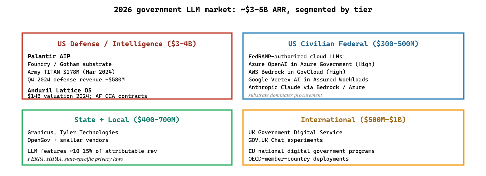

"Palantir AIP, Anduril, FedRAMP-authorized providers. The vendor list is short; the postmortem list is shorter and more instructive."
Sage, Gov-Vendor-Reader AI Agent
The government LLM vendor landscape in 2026 sits at the intersection of FedRAMP-authorized cloud providers, specialty defense and intelligence platforms (Palantir, Anduril), and the broader civilian-agency tooling that wraps the cloud LLM services in policy-and-compliance layers. This closing section consolidates the vendor list, walks through the canonical postmortems that have shaped public-sector AI practice, and lists the in-book and external references.
Prerequisites
This is a vendors-and-postmortems section and assumes familiarity with the earlier sections in Chapter 72.
The 2026 Government LLM Vendor Landscape
Palantir's AIP product was conceived in part by Alex Karp during a 2023 demo where he reportedly told a U.S. Army audience that "every soldier should have a chatbot that knows the doctrine". The Army's Vantage and TITAN program disclosures in 2024 and 2025 collectively topped $1 billion in contract value, making Palantir one of the largest single-vendor beneficiaries of the federal generative-AI procurement wave.
- FedRAMP-authorized cloud LLM providers. Azure OpenAI Service (Azure Government), AWS Bedrock (GovCloud), Google Vertex AI (Assured Workloads), and Anthropic Claude (through AWS or Azure). The authoritative status check is always the FedRAMP Marketplace.
- Palantir AI Platform (AIP). Built on Foundry and Gotham, deployed across the U.S. Army, Air Force, the intelligence community, and several civilian federal agencies. Distinctive emphasis on operational deployment with audit-log integration and human-on-the-loop posture. Public 2024 and 2025 disclosures of large defense contracts (the Army's Vantage and TITAN programs, plus expanding NATO-partner deployments).
- Anduril Industries (Lattice OS). Competing defense AI platform with a more autonomy-forward posture, particularly in unmanned-systems mission-execution. Significant 2024-2025 contract wins with the U.S. Air Force CCA program.
- Civilian-agency AI platforms. The GSA's AI Center of Excellence serves as the federal-government internal consultancy and standards body for civilian AI deployments. The 18F group within GSA continues to build open-source tools that agencies use as starting points.
- State and municipal vendors. Granicus, Tyler Technologies, OpenGov, and several smaller vendors provide LLM-augmented constituent-service products at the state and local level. The procurement patterns here tend to be more variable than at the federal level, with longer evaluation cycles dominated by FERPA, HIPAA, and state-specific privacy laws.
The structural feature of the 2026 government LLM market is that the substrate is a cloud LLM service (Azure OpenAI Service in Azure Government is the most-cited path) plus a workflow or platform layer on top. Procurement decisions are dominated by the substrate; agencies that have an existing relationship with a cloud provider tend to extend it into AI services through that provider's marketplace. Stand-alone government-LLM vendors that do not sit on top of an authorized substrate face a multi-year FedRAMP authorization path that few have completed. The exception is the defense and intelligence tier, where Palantir and Anduril have built dedicated platforms with their own authorization paths.

Postmortems Worth Reading
- NYC MyCity (2024): shipped chatbot answered policy questions it should have refused; produced advice contradicting city regulations on tipping, housing, and employment.
- Michigan MiDAS (2013-2017): pre-LLM, but the foundational cautionary tale for automated benefits decisions. Wrongly accused tens of thousands of unemployment fraud; the political and legal aftermath shaped current administrative-law guidance on algorithmic systems.
- Dutch SyRI / childcare-benefits scandal (2018-2021): algorithmic risk-scoring for childcare-benefits fraud disproportionately flagged immigrant families; political fallout brought down the government. ECHR ruling cemented EU concerns about algorithmic systems in public administration.
- Australian Robodebt (2016-2020): automated debt-collection system issued incorrect debt notices to hundreds of thousands of welfare recipients. Royal commission report (2023) is essential reading for anyone deploying automated decisions in public benefits.
Cross-References Inside This Book
- 4, the in-book chapter on AI regulation.
- Section 53.3 (LLM Risk Governance & Audit).
- Section 53.2 (EU AI Act Compliance in Practice).
- Chapter 57 (Compute Planning), particularly relevant for FedRAMP-aware procurement.
- Chapter 71 (Cybersecurity), the parallel chapter on auditable trust-boundary architectures.
Canonical External References
- National Institute of Standards and Technology. AI Risk Management Framework (AI RMF 1.0) and the 2024 Generative AI Profile, the cross-cutting U.S. reference for AI risk-management practice.
- U.S. General Services Administration. FedRAMP program home and the FedRAMP Marketplace, the authoritative catalog of authorized cloud services and LLM offerings.
- Office of Management and Budget. Memorandum M-24-10: Advancing Governance, Innovation, and Risk Management for Agency Use of Artificial Intelligence (March 2024), the binding federal policy for civilian agencies' AI use.
- U.S. Government Accountability Office. Artificial Intelligence: An Accountability Framework for Federal Agencies and Other Entities (GAO-21-519SP), the GAO's audit-oriented framework that congressional oversight regularly references.
- U.S. General Services Administration / 18F. Section508.gov, the official portal for federal accessibility requirements, including guidance on AI and chatbot interfaces.
- OECD. OECD.AI Policy Observatory, comparative tracker of national AI strategies and public-sector deployment evidence across OECD countries.
Who. Palantir Technologies and the U.S. Army's Project Manager Intelligence Systems and Analytics (PM IS&A), with TITAN (Tactical Intelligence Targeting Access Node) as the flagship deployment of Palantir AIP in a defense-operational context. Situation. In March 2024, the Army awarded Palantir a $178M production contract for TITAN, the next-generation ground station integrating space, high-altitude, aerial, and terrestrial sensor data for tactical commanders. Through 2025, Palantir expanded the AIP deployment across additional Army components and NATO-partner exercises. Problem. Defense AI deployments face constraints unlike civilian AI: classification-level data handling (TS/SCI), kinetic-effects-potential outputs, multi-coalition data partitioning, and operational tempo that does not tolerate the cloud-API roundtrip costs typical in civilian deployments. Decision. Palantir AIP combines the operational platform (Gotham/Foundry) with LLM-augmented analytical workflows, deployed in the Army's accredited environments with audit-log integration and human-on-the-loop posture for any kinetic-effects-adjacent decisions. How. The architecture spans classified enclaves (with on-premises open-weight models for the most sensitive workloads), DoD IL5/IL6 cloud tiers (for less sensitive workloads), and the broader Foundry-based collaborative environment. Every operator action, every LLM recommendation, and every kinetic-effects decision is logged into the operational audit trail. Result. TITAN and adjacent deployments are now reference architectures for defense-AI integration. Lesson. The defense and intelligence tier is a structurally different market from civilian-agency AI: longer authorization timelines (3-5+ years for new platforms), specialty integrators (Palantir, Anduril, Booz Allen, Leidos) with deep institutional relationships, and operational requirements that do not map cleanly onto the civilian-agency seven-layer pattern. The principles (human-on-the-loop, audit logging, accountability) translate; the implementations look very different.
The global government LLM market reached roughly $3-5B in 2025 ARR across the federal, state, local, and defense tiers. The sub-vertical breakdown reflects the structurally segmented nature of the market. U.S. defense and intelligence: Palantir's defense revenue grew to ~$580M in Q4 2024 alone (annualized ~$2.3B for the U.S. defense segment); Anduril raised at a $14B valuation in 2024 and signed multi-hundred-million-dollar Air Force CCA contracts. The combined defense-AI tier represents $3-4B of attributable ARR, though only a fraction is purely LLM-augmented work (the bulk is broader AI/ML platform). U.S. civilian federal: FedRAMP-authorized cloud LLM consumption (Azure OpenAI in Azure Gov, AWS Bedrock in GovCloud, Vertex AI in Assured Workloads) is harder to disaggregate from broader cloud spend but is roughly $300-500M ARR across civilian agencies. State and local: Granicus, Tyler Technologies, OpenGov, and smaller vendors collectively represent $400-700M ARR of government-facing software, with LLM features contributing perhaps 10-15 percent of attributable revenue. International: the UK GDS, EU national digital-government programs, and OECD-member-country deployments collectively represent $500M-$1B ARR.
Time-to-deploy economics. Federal civilian deployments routinely take 24-36 months from RFP to production cutover. Federal defense deployments routinely take 36-60 months for new platforms, though follow-on contracts on existing platforms ship faster. State and municipal deployments range from 6 months (low-risk constituent-service chatbots) to 24 months (consequential workflows). The procurement-velocity gap relative to commercial deployments (3-9 months typical) is the structural feature of public-sector AI economics.
- Section 69.5 (Healthcare LLM Vendors) for the parallel platform-incumbent consolidation pattern (Abridge, Dragon Copilot) in healthcare.
- Section 70.5 (Education LLM Vendors) for the Khanmigo, Magic School, and ChatGPT Edu market structure.
- Section 71.5 (Cybersecurity LLM Vendors) for the Microsoft Security Copilot and CrowdStrike Charlotte platform-consolidation pattern.
- Chapter 66 (Procurement and Vendor Selection) for the cross-cutting vendor-selection methodology.
- Chapter 53 (Regulation and Compliance) for the broader compliance methodology underlying federal AI procurement.
Objective
Build a constituent-services chatbot over a small policy corpus (20 sample policy and benefits-eligibility documents drawn from USA.gov and benefits.gov) with two non-negotiable constraints: every factual claim must be accompanied by an in-text citation to a retrieved chunk, and any question outside the corpus scope must trigger a refusal with a referral to a human caseworker. The point is to feel how government LLM design is dominated by what the bot is told not to say.
Setup
You need an OpenAI API key (or any LLM with structured-output support), a Chroma vector store, and the 20 source documents. Use the publicly available USA.gov plain-language policy pages and benefits.gov eligibility pages; download them once and store them locally so the corpus is fixed for reproducibility.
pip install openai chromadb beautifulsoup4 requests pandasSteps
- Build the corpus. Scrape 20 USA.gov and benefits.gov pages, chunk by section heading, and store with metadata: source URL, last-modified date, and policy-section ID. Government RAG corpora always need the source URL because constituents (and oversight bodies) will demand to see the citation.
- Write a strict-scope system prompt. The prompt must (a) require every claim to be followed by a bracketed citation like
[doc_id], (b) refuse anything outside the corpus, and (c) include a fixed referral string for refusals: "I can only answer questions about the policies in my corpus; for personal eligibility decisions, please contact a caseworker at..." - Build a top-3 retrieval step with OpenAI's
text-embedding-3-smallembeddings. Reject any retrieval with a top-1 cosine similarity below 0.35; that is the scope-boundary heuristic. - Run a 30-question eval set with 20 in-scope and 10 deliberately-out-of-scope questions (medical advice, legal opinions, opinion on a political question). Score on three dimensions: citation coverage (does every factual claim have a citation?), citation correctness (does the cited chunk actually support the claim, GPT-4o-as-judge?), and refusal rate on the out-of-scope set.
- Inspect failures. Two failure modes dominate: the bot citing a real document but with the wrong section ID, and the bot answering an out-of-scope question because it pattern-matched a single keyword. Both are the empirical reason every government LLM deployment ships with audit-log review.
Expected Output
A CSV with per-question citation coverage, citation correctness, in-scope answer correctness, and an out-of-scope refusal flag, plus a summary table. With strict prompting, citation-coverage rates above 0.95 and out-of-scope refusal rates above 0.90 are achievable on small fixed corpora; the harder bar that government RFPs require is the third nine on citation correctness, which usually demands a verification step.
Extension
Replace the retrieval-only verification with a second LLM call that re-reads the cited chunk and confirms support for each claim, and measure the latency and cost overhead; this is the verifier-loop pattern that government and public-sector deployments use to defend against an administrative-record audit.
Research Frontier: Where Government LLMs Are Heading
Public-sector LLM research lags the consumer market by 18 to 36 months because authorization timelines are long, but a distinct research agenda is now visible around grounded retrieval over statutes and regulations, algorithmic-accountability instrumentation, and provenance for administrative decisions.
On grounding, the canonical reference is LegalBench (Guha et al., NeurIPS 2023, arXiv:2308.11462) for testing whether models can reason over the kind of statutory and regulatory text that public-sector agents must operate against. The 2024 UK GOV.UK Chat evaluation (UK GDS, 2024) is one of the few publicly-released large-scale pilot postmortems, reporting accuracy bands and explicit reasons for deferring public launch. The Singapore Pair platform (GovTech, 2024) is the largest active deployment outside the U.S. and has documented operational lessons.
On accountability, the research thread is broader: Datasheets for Datasets (Gebru et al., 2018), Model Cards (Mitchell et al., 2019), and the more recent algorithmic impact assessment templates from the Canadian Treasury Board and the U.S. NIST AI RMF Generative AI Profile (NIST AI 600-1) are converging on a documentation regime that procurement teams and oversight bodies can use to evaluate public-sector LLM deployments before authorization. The Dutch SyRI (ECLI:NL:RBDHA:2020:1878) and Australian Robodebt (Royal Commission, 2023) postmortems anchor what "accountability" must mean in practice.
Where the field is heading: agentic case-handling assistants with formal audit logs, regulator-readable model cards that include policy provenance for every system, and authorization frameworks (FedRAMP, EU AI Act conformity) that explicitly account for generative-AI failure modes. The interesting open research question is how to make grounded retrieval over statutes verifiable enough that an oversight body can confirm correctness without re-doing the agency's work, which is the bottleneck preventing many high-stakes civic LLM use cases from leaving pilot.
Show Answer
Show Answer
Show Answer
What Comes Next
Chapter 72 ends here. Chapter 73 on manufacturing turns to the vertical where the auditability and human-in-the-loop requirements have a different shape: not administrative-law-due-process but safety-critical-systems engineering. The IT/OT boundary that constrains manufacturing LLMs is the manufacturing equivalent of the rights-impacting-vs-not classification that constrains government LLMs.
What's Next?
In the next chapter, Chapter 73: Manufacturing Use Cases That Actually Work, we continue building on the material from this chapter.